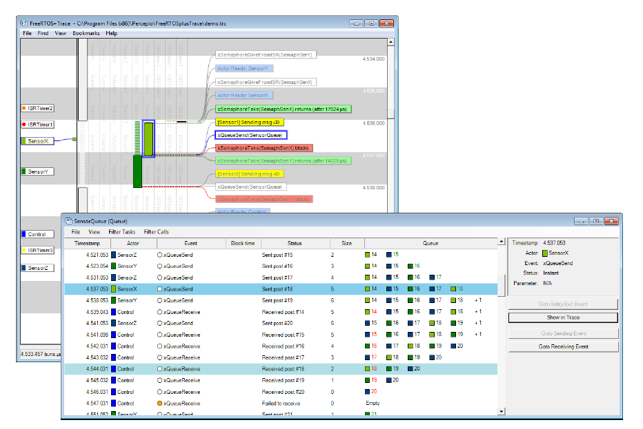

12.3 Tracealyzer for FreeRTOS
Tracealyzer for FreeRTOS is a run-time diagnostic and optimization tool provided by our partner company, Percepio.
Tracealyzer for FreeRTOS captures valuable dynamic behavior information, then presents the captured information in interconnected graphical views. The tool is also capable of displaying multiple synchronized views.
The captured information is invaluable when analyzing, troubleshooting, or simply optimizing a FreeRTOS application.
Tracealyzer for FreeRTOS can be used side-by-side with a traditional debugger, and complements the debugger's view with a higher level, time-based perspective.

Figure 12.2 FreeRTOS+Trace main trace view - one of more than 20 interconnected trace views

Figure 12.3 FreeRTOS+Trace CPU load view - one of more than 20 interconnected trace views

Figure 12.4 FreeRTOS+Trace response time view - one of more than 20 interconnected trace views

Figure 12.5 FreeRTOS+Trace user event plot view - one of more than 20 interconnected trace views

Figure 12.6 FreeRTOS+Trace kernel object history view - one of more than 20 interconnected trace views"/>
Figure 12.1 *FreeRTOS+Trace includes more than 20 interconnected views

Figure 12.2 FreeRTOS+Trace main trace view - one of more than 20 interconnected trace views
Figure 12.3 FreeRTOS+Trace CPU load view - one of more than 20 interconnected trace views
Figure 12.4 FreeRTOS+Trace response time view - one of more than 20 interconnected trace views
Figure 12.5 FreeRTOS+Trace user event plot view - one of more than 20 interconnected trace views
Figure 12.6 FreeRTOS+Trace kernel object history view - one of more than 20 interconnected trace views*